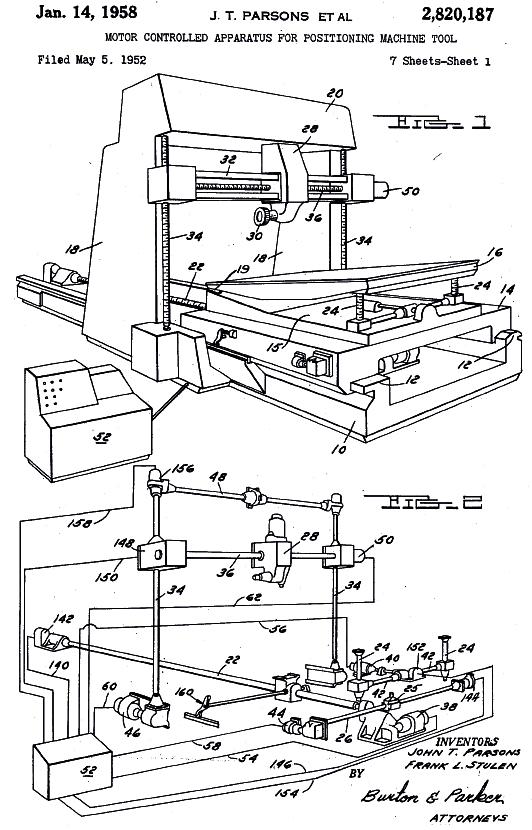
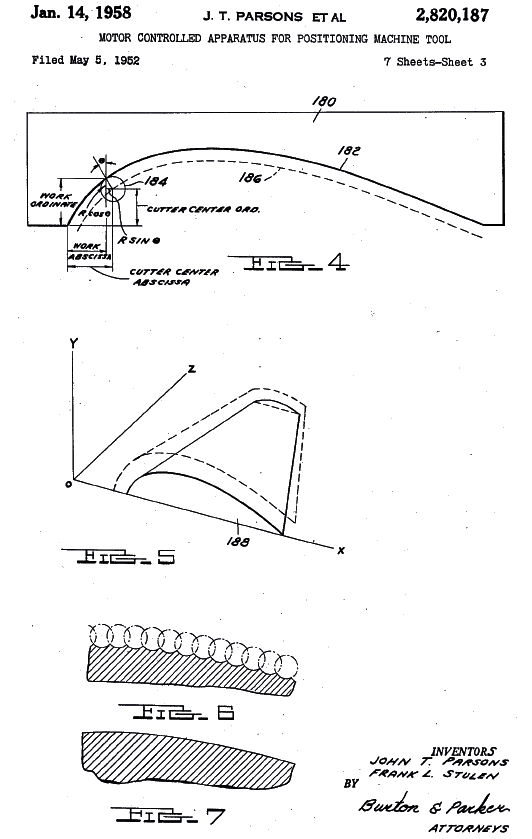
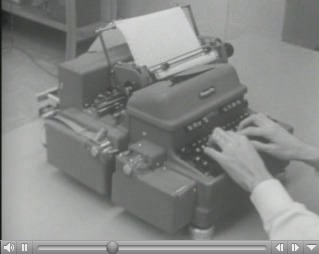

Bilgisayar Destekli Ýmalat (CAM). Bilgisayar Destekli Tasarým (CAD)'dan daha önce baþladý.
1946 yýlýnda John T. Parsons ve ekibi helikopter kanatlarýnýn karmaþýk profillerini iþleyebilmek amacýyla ilk defa bilgisayar kontrollü bir freze tezgahý geliþtirdi. Parsons, 1952 yýlýnda bu teknoloji konusunda bir patente baþvurdu ve 1958 yýlýnda "Motor Controlled Apparatus for Positioning Machine Tool" baþlýklý (daha sonralarý Numerical Control, NC olarak adlandýrýlmýþtýr) ve 2,820,187 no'lu patenti aldý. Aþaðýda bu patente ait iki sayfa görülmektedir.
Tüm patenti indirmek ve görüntülemek için týklayýnýz; US-patent-Parsons-2820187-1958.pdf (1,09MB)


1952 yýlýnda ABD Hava Kuvvetleri þekilleri zor olan bazý balistik parçalarýn otomatik olarak hassas bir biçimde üretilmesi için MIT üniversitesine bir proje verdi. Üniversitedeki araþtýrmacýlar bir freze tezgahýný geliþtirerek bu parçalarý otomatik olarak üretmeyi baþardýlar.

TX-0 uygulamalarýný gösteren 8 dakikalýk bir film.
(Film Clip - MIT CSAIL Film History of AI Project > http://projects.csail.mit.edu/films/...)
This film contains a lot of shots of the TX-0 computer that used to reside in building 26,
including its paper-tape machine, a paper terminal, and some sort of early display.